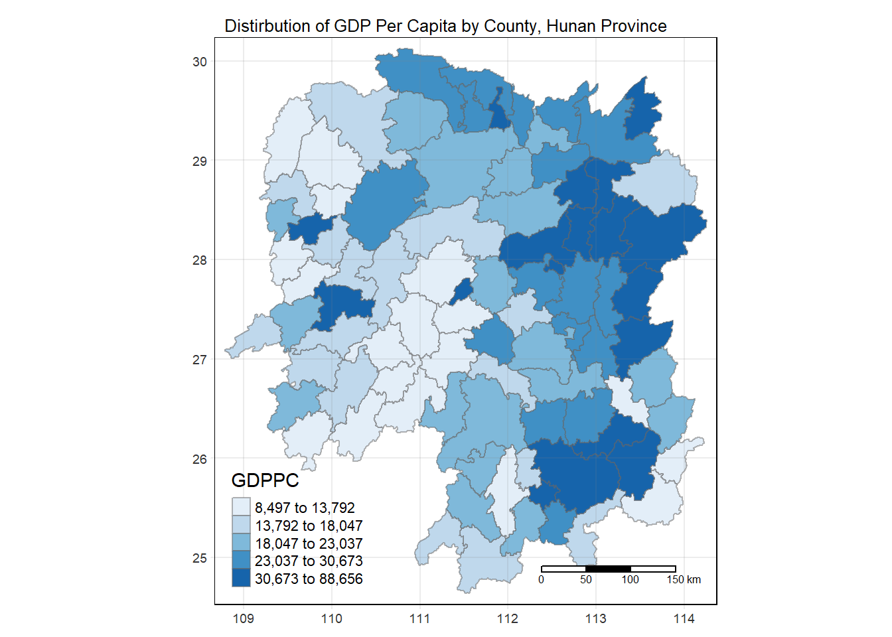
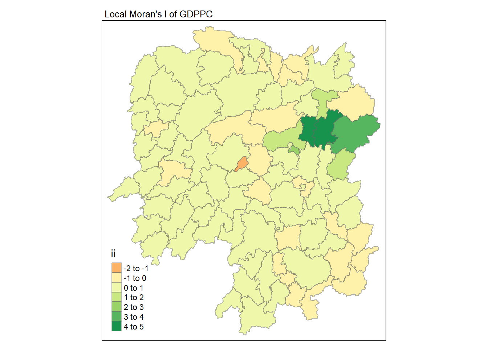
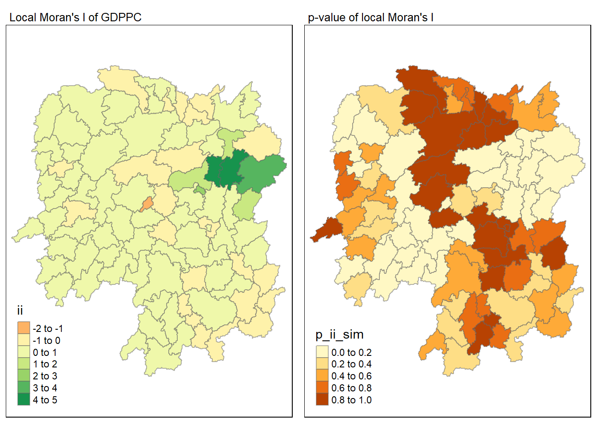
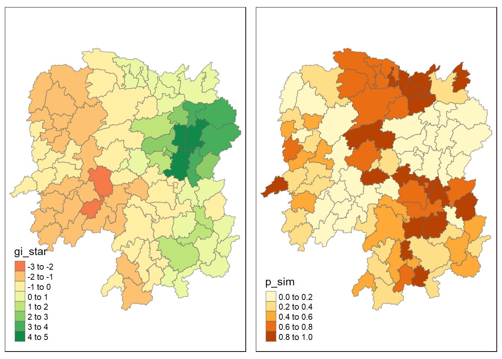
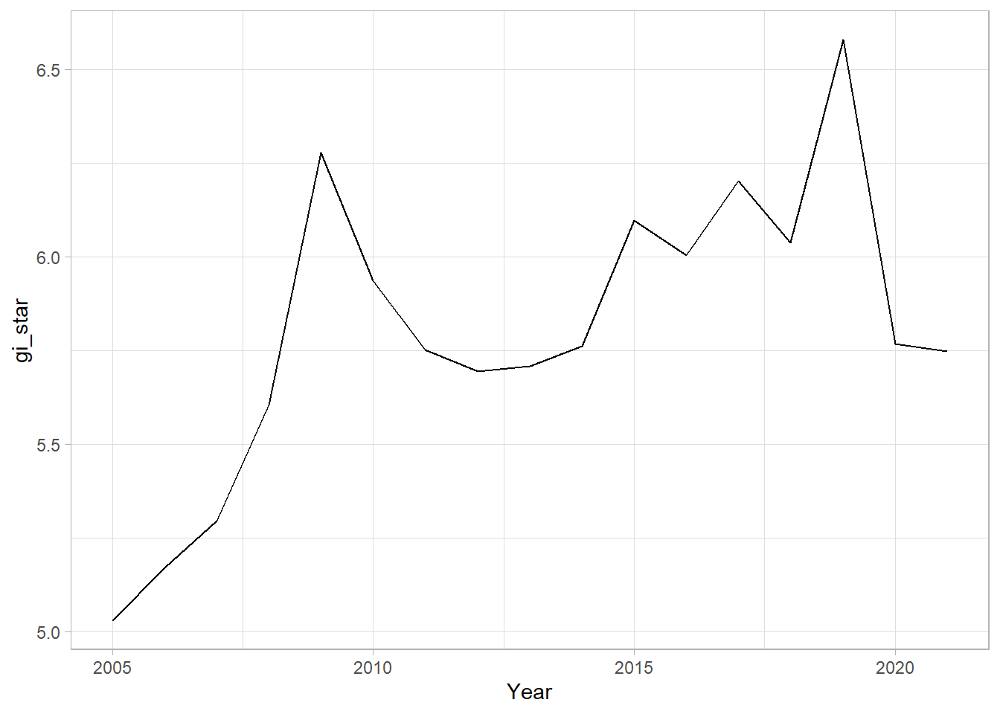
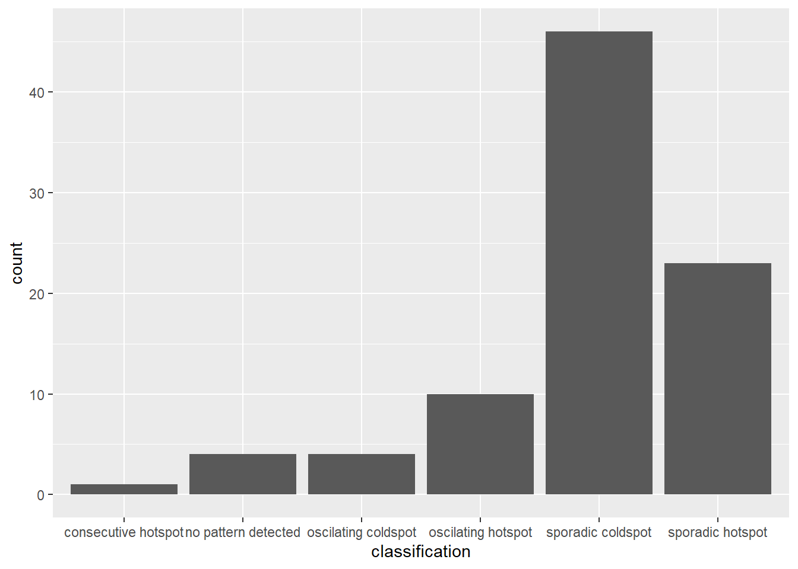
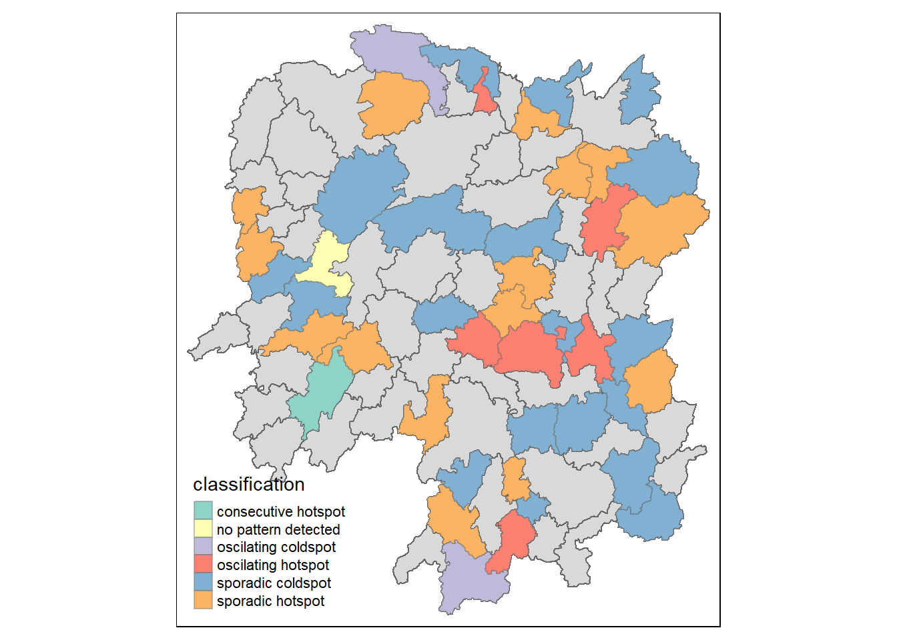

pacman::p_load(sf, tmap, sfdep, tidyverse, knitr, plotly)In-Class Exercise 2: Spatial Weights, Spatial Association, and Emerging Hotspot Analysis
1. Overview
This in-class exercise introduces sfdep, an alternative R package to spdep used in Hands-on Exercise 2. It will cover methods to derive spatial weights, global and and local measures of spatial association, and emerging hotspot analysis.
2. Getting Started
We will use the following packages in this in-class exercise:
2.1. The Data
We will use two data sets about Hunan in this exercise.
First, we will import Hunan, a geospatial data set in ESRI shapefile format:
hunan <- st_read(dsn = "data/geospatial",
layer = "Hunan")Reading layer `Hunan' from data source
`C:\Users\noel1\Documents\School\02. Special Sem 1\ISSS624 Geospatial Analysis\noelnomel\ISSS624\In_class_Ex\In_class_Ex02\data\geospatial'
using driver `ESRI Shapefile'
Simple feature collection with 88 features and 7 fields
Geometry type: POLYGON
Dimension: XY
Bounding box: xmin: 108.7831 ymin: 24.6342 xmax: 114.2544 ymax: 30.12812
Geodetic CRS: WGS 84Next, we will import Hunan_2012, an attribute data set in csv file:
hunan2012 <- read_csv("data/aspatial/Hunan_2012.csv")We will combine hunan and hunan2012 using left_join():
hunan_GDPPC <- left_join(hunan, hunan2012) %>%
select(1:4, 7, 15)
glimpse(hunan_GDPPC)Rows: 88
Columns: 7
$ NAME_2 <chr> "Changde", "Changde", "Changde", "Changde", "Changde", "Chan…
$ ID_3 <int> 21098, 21100, 21101, 21102, 21103, 21104, 21109, 21110, 2111…
$ NAME_3 <chr> "Anxiang", "Hanshou", "Jinshi", "Li", "Linli", "Shimen", "Li…
$ ENGTYPE_3 <chr> "County", "County", "County City", "County", "County", "Coun…
$ County <chr> "Anxiang", "Hanshou", "Jinshi", "Li", "Linli", "Shimen", "Li…
$ GDPPC <dbl> 23667, 20981, 34592, 24473, 25554, 27137, 63118, 62202, 7066…
$ geometry <POLYGON [°]> POLYGON ((112.0625 29.75523..., POLYGON ((112.2288 2…Use hunan as the first data in
left_join()to retain the geometry of the shapefile and the sf data frame output format.
select()is used to retain the columns we want in thehunan_GDPPCsimple feature data frame.
Lastly, we will import Hunan_GDPPC, an attribute data set in csv file:
GDPPC <- read_csv("data/aspatial/Hunan_GDPPC.csv")2.2. Visualising GDPPC by County
tmap_mode("plot")
tm_shape(hunan_GDPPC) +
tm_fill("GDPPC", style = "quantile", palette = "Blues") +
tm_borders(alpha = 0.5) +
tm_layout(main.title = "Distirbution of GDP Per Capita by County, Hunan Province",
main.title.position = "center",
main.title.size = 0.8,
legend.width = 0.45,
legend.height = 0.45,
frame = TRUE) +
tm_scale_bar() +
tm_grid(alpha = 0.15)
3. Spatial Weights
Spatial weights matrices are mathematical representations of the spatial structure of the data. They assign weights to the pairs of locations based on some criteria, such as distance, adjacency, or similarity. Two types of spatial weights will be discussed in this exercise:
Contiguity weights
Distance-based weights
4. Contiguity Spatial Weights
Contiguity spatial weights assign weights based on whether pairs of locations share a common boundary or vertex. Contiguity can be derived using different methods, such as Queen, Rook, Bishop.
Two steps are required to derive contiguity spatial weights using the sfdep package:
Identify a contiguity neighbour list using
st_contiguity()Derive contiguity spacial weights using
st_weights()
4.1. Using Queen’s Method
First, we will use the following code to derive a contiguity neighbour list:
nb_queen <- hunan_GDPPC %>%
mutate(nb = st_contiguity(geometry),
.before = 1)
summary(nb_queen$nb)Neighbour list object:
Number of regions: 88
Number of nonzero links: 448
Percentage nonzero weights: 5.785124
Average number of links: 5.090909
Link number distribution:
1 2 3 4 5 6 7 8 9 11
2 2 12 16 24 14 11 4 2 1
2 least connected regions:
30 65 with 1 link
1 most connected region:
85 with 11 linksIt is observed from the summary that there are 88 regions in Hunan province. The most well-connected region has 11 neighbours. There are two areas with only one neighbour.
kable(head(nb_queen,
n = 10))| nb | NAME_2 | ID_3 | NAME_3 | ENGTYPE_3 | County | GDPPC | geometry |
|---|---|---|---|---|---|---|---|
| 2, 3, 4, 57, 85 | Changde | 21098 | Anxiang | County | Anxiang | 23667 | POLYGON ((112.0625 29.75523… |
| 1, 57, 58, 78, 85 | Changde | 21100 | Hanshou | County | Hanshou | 20981 | POLYGON ((112.2288 29.11684… |
| 1, 4, 5, 85 | Changde | 21101 | Jinshi | County City | Jinshi | 34592 | POLYGON ((111.8927 29.6013,… |
| 1, 3, 5, 6 | Changde | 21102 | Li | County | Li | 24473 | POLYGON ((111.3731 29.94649… |
| 3, 4, 6, 85 | Changde | 21103 | Linli | County | Linli | 25554 | POLYGON ((111.6324 29.76288… |
| 4, 5, 69, 75, 85 | Changde | 21104 | Shimen | County | Shimen | 27137 | POLYGON ((110.8825 30.11675… |
| 67, 71, 74, 84 | Changsha | 21109 | Liuyang | County City | Liuyang | 63118 | POLYGON ((113.9905 28.5682,… |
| 9, 46, 47, 56, 78, 80, 86 | Changsha | 21110 | Ningxiang | County | Ningxiang | 62202 | POLYGON ((112.7181 28.38299… |
| 8, 66, 68, 78, 84, 86 | Changsha | 21111 | Wangcheng | County | Wangcheng | 70666 | POLYGON ((112.7914 28.52688… |
| 16, 17, 19, 20, 22, 70, 72, 73 | Chenzhou | 21112 | Anren | County | Anren | 12761 | POLYGON ((113.1757 26.82734… |
We can use st_ng_lag_cumul() to identify higher order neighbours:
nb2_queen <- hunan_GDPPC %>%
mutate(nb = st_contiguity(geometry),
nb2 = st_nb_lag_cumul(nb,2),
.before = 1)
nb2_queenSimple feature collection with 88 features and 8 fields
Geometry type: POLYGON
Dimension: XY
Bounding box: xmin: 108.7831 ymin: 24.6342 xmax: 114.2544 ymax: 30.12812
Geodetic CRS: WGS 84
First 10 features:
nb
1 2, 3, 4, 57, 85
2 1, 57, 58, 78, 85
3 1, 4, 5, 85
4 1, 3, 5, 6
5 3, 4, 6, 85
6 4, 5, 69, 75, 85
7 67, 71, 74, 84
8 9, 46, 47, 56, 78, 80, 86
9 8, 66, 68, 78, 84, 86
10 16, 17, 19, 20, 22, 70, 72, 73
nb2
1 2, 3, 4, 5, 6, 32, 56, 57, 58, 64, 69, 75, 76, 78, 85
2 1, 3, 4, 5, 6, 8, 9, 32, 56, 57, 58, 64, 68, 69, 75, 76, 78, 85
3 1, 2, 4, 5, 6, 32, 56, 57, 69, 75, 78, 85
4 1, 2, 3, 5, 6, 57, 69, 75, 85
5 1, 2, 3, 4, 6, 32, 56, 57, 69, 75, 78, 85
6 1, 2, 3, 4, 5, 32, 53, 55, 56, 57, 69, 75, 78, 85
7 9, 19, 66, 67, 71, 73, 74, 76, 84, 86
8 2, 9, 19, 21, 31, 32, 34, 35, 36, 41, 45, 46, 47, 56, 58, 66, 68, 74, 78, 80, 84, 85, 86
9 2, 7, 8, 19, 21, 35, 46, 47, 56, 58, 66, 67, 68, 74, 76, 78, 80, 84, 85, 86
10 11, 14, 15, 16, 17, 18, 19, 20, 21, 22, 23, 70, 71, 72, 73, 74, 82, 83, 86
NAME_2 ID_3 NAME_3 ENGTYPE_3 County GDPPC
1 Changde 21098 Anxiang County Anxiang 23667
2 Changde 21100 Hanshou County Hanshou 20981
3 Changde 21101 Jinshi County City Jinshi 34592
4 Changde 21102 Li County Li 24473
5 Changde 21103 Linli County Linli 25554
6 Changde 21104 Shimen County Shimen 27137
7 Changsha 21109 Liuyang County City Liuyang 63118
8 Changsha 21110 Ningxiang County Ningxiang 62202
9 Changsha 21111 Wangcheng County Wangcheng 70666
10 Chenzhou 21112 Anren County Anren 12761
geometry
1 POLYGON ((112.0625 29.75523...
2 POLYGON ((112.2288 29.11684...
3 POLYGON ((111.8927 29.6013,...
4 POLYGON ((111.3731 29.94649...
5 POLYGON ((111.6324 29.76288...
6 POLYGON ((110.8825 30.11675...
7 POLYGON ((113.9905 28.5682,...
8 POLYGON ((112.7181 28.38299...
9 POLYGON ((112.7914 28.52688...
10 POLYGON ((113.1757 26.82734...When order is 2, the result contains the first and second order neighbours.
We can derive the contiguity weights in one step using the following code:
wm_q <- hunan_GDPPC %>%
mutate(nb = st_contiguity(geometry),
wt = st_weights(nb, style = "W"),
.before = 1)
wm_qSimple feature collection with 88 features and 8 fields
Geometry type: POLYGON
Dimension: XY
Bounding box: xmin: 108.7831 ymin: 24.6342 xmax: 114.2544 ymax: 30.12812
Geodetic CRS: WGS 84
First 10 features:
nb
1 2, 3, 4, 57, 85
2 1, 57, 58, 78, 85
3 1, 4, 5, 85
4 1, 3, 5, 6
5 3, 4, 6, 85
6 4, 5, 69, 75, 85
7 67, 71, 74, 84
8 9, 46, 47, 56, 78, 80, 86
9 8, 66, 68, 78, 84, 86
10 16, 17, 19, 20, 22, 70, 72, 73
wt
1 0.2, 0.2, 0.2, 0.2, 0.2
2 0.2, 0.2, 0.2, 0.2, 0.2
3 0.25, 0.25, 0.25, 0.25
4 0.25, 0.25, 0.25, 0.25
5 0.25, 0.25, 0.25, 0.25
6 0.2, 0.2, 0.2, 0.2, 0.2
7 0.25, 0.25, 0.25, 0.25
8 0.1428571, 0.1428571, 0.1428571, 0.1428571, 0.1428571, 0.1428571, 0.1428571
9 0.1666667, 0.1666667, 0.1666667, 0.1666667, 0.1666667, 0.1666667
10 0.125, 0.125, 0.125, 0.125, 0.125, 0.125, 0.125, 0.125
NAME_2 ID_3 NAME_3 ENGTYPE_3 County GDPPC
1 Changde 21098 Anxiang County Anxiang 23667
2 Changde 21100 Hanshou County Hanshou 20981
3 Changde 21101 Jinshi County City Jinshi 34592
4 Changde 21102 Li County Li 24473
5 Changde 21103 Linli County Linli 25554
6 Changde 21104 Shimen County Shimen 27137
7 Changsha 21109 Liuyang County City Liuyang 63118
8 Changsha 21110 Ningxiang County Ningxiang 62202
9 Changsha 21111 Wangcheng County Wangcheng 70666
10 Chenzhou 21112 Anren County Anren 12761
geometry
1 POLYGON ((112.0625 29.75523...
2 POLYGON ((112.2288 29.11684...
3 POLYGON ((111.8927 29.6013,...
4 POLYGON ((111.3731 29.94649...
5 POLYGON ((111.6324 29.76288...
6 POLYGON ((110.8825 30.11675...
7 POLYGON ((113.9905 28.5682,...
8 POLYGON ((112.7181 28.38299...
9 POLYGON ((112.7914 28.52688...
10 POLYGON ((113.1757 26.82734...Three arguments can be passed into st_weights:
nb: A neighbor list object as created byst_neighbors().style: Default “W” for row standardized weights. This value can also be “B”, “C”, “U”, “minmax”, and “S”. See spdep::nb2listw() for details.allow_zero: IfTRUE, assigns zero as lagged value to zone without neighbors.
4.2. Using Rook’s Method
First, we will use the following code to derive a contiguity neighbour list:
nb_rook <- hunan_GDPPC %>%
mutate(nb = st_contiguity(geometry,
queen = FALSE),
.before = 1)
summary(nb_rook$nb)Neighbour list object:
Number of regions: 88
Number of nonzero links: 440
Percentage nonzero weights: 5.681818
Average number of links: 5
Link number distribution:
1 2 3 4 5 6 7 8 9 10
2 2 12 20 21 14 11 3 2 1
2 least connected regions:
30 65 with 1 link
1 most connected region:
85 with 10 linksWe can derive the contiguity weights in one step using the following code:
wm_r <- hunan_GDPPC %>%
mutate(nb = st_contiguity(geometry,
queen = FALSE),
wt = st_weights(nb, style = "W"),
.before = 1)
wm_rSimple feature collection with 88 features and 8 fields
Geometry type: POLYGON
Dimension: XY
Bounding box: xmin: 108.7831 ymin: 24.6342 xmax: 114.2544 ymax: 30.12812
Geodetic CRS: WGS 84
First 10 features:
nb
1 3, 4, 57, 85
2 57, 58, 78, 85
3 1, 4, 5, 85
4 1, 3, 5, 6
5 3, 4, 6, 85
6 4, 5, 69, 75, 85
7 67, 71, 74, 84
8 9, 46, 47, 56, 78, 80, 86
9 8, 66, 68, 78, 84, 86
10 16, 19, 20, 22, 70, 72, 73
wt
1 0.25, 0.25, 0.25, 0.25
2 0.25, 0.25, 0.25, 0.25
3 0.25, 0.25, 0.25, 0.25
4 0.25, 0.25, 0.25, 0.25
5 0.25, 0.25, 0.25, 0.25
6 0.2, 0.2, 0.2, 0.2, 0.2
7 0.25, 0.25, 0.25, 0.25
8 0.1428571, 0.1428571, 0.1428571, 0.1428571, 0.1428571, 0.1428571, 0.1428571
9 0.1666667, 0.1666667, 0.1666667, 0.1666667, 0.1666667, 0.1666667
10 0.1428571, 0.1428571, 0.1428571, 0.1428571, 0.1428571, 0.1428571, 0.1428571
NAME_2 ID_3 NAME_3 ENGTYPE_3 County GDPPC
1 Changde 21098 Anxiang County Anxiang 23667
2 Changde 21100 Hanshou County Hanshou 20981
3 Changde 21101 Jinshi County City Jinshi 34592
4 Changde 21102 Li County Li 24473
5 Changde 21103 Linli County Linli 25554
6 Changde 21104 Shimen County Shimen 27137
7 Changsha 21109 Liuyang County City Liuyang 63118
8 Changsha 21110 Ningxiang County Ningxiang 62202
9 Changsha 21111 Wangcheng County Wangcheng 70666
10 Chenzhou 21112 Anren County Anren 12761
geometry
1 POLYGON ((112.0625 29.75523...
2 POLYGON ((112.2288 29.11684...
3 POLYGON ((111.8927 29.6013,...
4 POLYGON ((111.3731 29.94649...
5 POLYGON ((111.6324 29.76288...
6 POLYGON ((110.8825 30.11675...
7 POLYGON ((113.9905 28.5682,...
8 POLYGON ((112.7181 28.38299...
9 POLYGON ((112.7914 28.52688...
10 POLYGON ((113.1757 26.82734...5. Distance-based Weights
Distance-based weights are the most common type of spatial weights matrices. They assign higher weights to pairs of locations that are closer to each other and lower weights to pairs that are farther apart. There are three commonly-used distance-based spatial weights:
Fixed distance weight
Adaptive distance weight
Inverse distance weight
5.1. Deriving Fixed Distance Weight
First, we need to determine the upper limit for the distance band by using the following steps:
geo <- sf::st_geometry(hunan_GDPPC)
nb <- st_knn(geo, longlat = TRUE)
dists <- unlist(st_nb_dists(geo,nb))
summary(dists) Min. 1st Qu. Median Mean 3rd Qu. Max.
21.56 29.11 36.89 37.34 43.21 65.80 The summary report shows that the maximum distance to the nearest neighbour is 65.80 km. Hence a threshold of 66km will ensure that each neighbour has at least one neighbour.
Next, we will derive the fixed distance weight using the following code:
wm_fd <- hunan_GDPPC %>%
mutate(nb = st_dist_band(geometry,
upper = 66),
wt = st_weights(nb),
.before = 1)
st_dists_band()is used to identify neigbours based on a distance band (66km in our case). The output is a list of neighbours saved asnb.
st_weights()is used to calculate polygon spatial weights of thenblist. Note that:
The default style argument is set to “W” for row-standardised weights
Tthe default
allow_zeroargument is set toTRUEto assign zero as lagged value to zones without neighbours.
kable(head(wm_fd,
n = 10))| nb | wt | NAME_2 | ID_3 | NAME_3 | ENGTYPE_3 | County | GDPPC | geometry |
|---|---|---|---|---|---|---|---|---|
| 2, 3, 4, 5, 57, 64 | 0.1666667, 0.1666667, 0.1666667, 0.1666667, 0.1666667, 0.1666667 | Changde | 21098 | Anxiang | County | Anxiang | 23667 | POLYGON ((112.0625 29.75523… |
| 1, 57, 58, 78, 85 | 0.2, 0.2, 0.2, 0.2, 0.2 | Changde | 21100 | Hanshou | County | Hanshou | 20981 | POLYGON ((112.2288 29.11684… |
| 1, 4, 5, 57 | 0.25, 0.25, 0.25, 0.25 | Changde | 21101 | Jinshi | County City | Jinshi | 34592 | POLYGON ((111.8927 29.6013,… |
| 1, 3, 5, 6 | 0.25, 0.25, 0.25, 0.25 | Changde | 21102 | Li | County | Li | 24473 | POLYGON ((111.3731 29.94649… |
| 1, 3, 4, 6, 69 | 0.2, 0.2, 0.2, 0.2, 0.2 | Changde | 21103 | Linli | County | Linli | 25554 | POLYGON ((111.6324 29.76288… |
| 4, 5, 69 | 0.3333333, 0.3333333, 0.3333333 | Changde | 21104 | Shimen | County | Shimen | 27137 | POLYGON ((110.8825 30.11675… |
| 67, 71, 84 | 0.3333333, 0.3333333, 0.3333333 | Changsha | 21109 | Liuyang | County City | Liuyang | 63118 | POLYGON ((113.9905 28.5682,… |
| 9, 46, 47, 78, 80 | 0.2, 0.2, 0.2, 0.2, 0.2 | Changsha | 21110 | Ningxiang | County | Ningxiang | 62202 | POLYGON ((112.7181 28.38299… |
| 8, 46, 66, 68, 84, 86 | 0.1666667, 0.1666667, 0.1666667, 0.1666667, 0.1666667, 0.1666667 | Changsha | 21111 | Wangcheng | County | Wangcheng | 70666 | POLYGON ((112.7914 28.52688… |
| 16, 20, 22, 70, 72, 73 | 0.1666667, 0.1666667, 0.1666667, 0.1666667, 0.1666667, 0.1666667 | Chenzhou | 21112 | Anren | County | Anren | 12761 | POLYGON ((113.1757 26.82734… |
5.2. Deriving Adaptive Distance Weights
We will derive the adaptive distance weight using the following code:
wm_ad <- hunan_GDPPC %>%
mutate(nb = st_knn(geometry,
k = 8),
wt = st_weights(nb),
.before = 1)
kable(head(wm_ad,
n = 10))| nb | wt | NAME_2 | ID_3 | NAME_3 | ENGTYPE_3 | County | GDPPC | geometry |
|---|---|---|---|---|---|---|---|---|
| 2, 3, 4, 5, 57, 58, 64, 76 | 0.125, 0.125, 0.125, 0.125, 0.125, 0.125, 0.125, 0.125 | Changde | 21098 | Anxiang | County | Anxiang | 23667 | POLYGON ((112.0625 29.75523… |
| 1, 3, 8, 57, 58, 68, 78, 85 | 0.125, 0.125, 0.125, 0.125, 0.125, 0.125, 0.125, 0.125 | Changde | 21100 | Hanshou | County | Hanshou | 20981 | POLYGON ((112.2288 29.11684… |
| 1, 2, 4, 5, 6, 57, 64, 85 | 0.125, 0.125, 0.125, 0.125, 0.125, 0.125, 0.125, 0.125 | Changde | 21101 | Jinshi | County City | Jinshi | 34592 | POLYGON ((111.8927 29.6013,… |
| 1, 2, 3, 5, 6, 57, 64, 69 | 0.125, 0.125, 0.125, 0.125, 0.125, 0.125, 0.125, 0.125 | Changde | 21102 | Li | County | Li | 24473 | POLYGON ((111.3731 29.94649… |
| 1, 2, 3, 4, 6, 57, 69, 85 | 0.125, 0.125, 0.125, 0.125, 0.125, 0.125, 0.125, 0.125 | Changde | 21103 | Linli | County | Linli | 25554 | POLYGON ((111.6324 29.76288… |
| 1, 2, 3, 4, 5, 69, 75, 85 | 0.125, 0.125, 0.125, 0.125, 0.125, 0.125, 0.125, 0.125 | Changde | 21104 | Shimen | County | Shimen | 27137 | POLYGON ((110.8825 30.11675… |
| 9, 66, 67, 68, 71, 74, 84, 86 | 0.125, 0.125, 0.125, 0.125, 0.125, 0.125, 0.125, 0.125 | Changsha | 21109 | Liuyang | County City | Liuyang | 63118 | POLYGON ((113.9905 28.5682,… |
| 2, 9, 35, 46, 47, 78, 80, 86 | 0.125, 0.125, 0.125, 0.125, 0.125, 0.125, 0.125, 0.125 | Changsha | 21110 | Ningxiang | County | Ningxiang | 62202 | POLYGON ((112.7181 28.38299… |
| 8, 46, 47, 66, 68, 78, 84, 86 | 0.125, 0.125, 0.125, 0.125, 0.125, 0.125, 0.125, 0.125 | Changsha | 21111 | Wangcheng | County | Wangcheng | 70666 | POLYGON ((112.7914 28.52688… |
| 16, 17, 19, 20, 22, 70, 72, 73 | 0.125, 0.125, 0.125, 0.125, 0.125, 0.125, 0.125, 0.125 | Chenzhou | 21112 | Anren | County | Anren | 12761 | POLYGON ((113.1757 26.82734… |
st_knn()is used to identify neighbours based onknumber of nearest neighbours (8 in our case). The output is a list of neighbours saved asnb.
5.3. Deriving Inverse Distance Weights
We will derive the inverse distance weight using the following code:
wm_idw <- hunan_GDPPC %>%
mutate(nb = st_contiguity(geometry),
wt = st_inverse_distance(nb, geometry,
scale = 1,
alpha = 1),
.before = 1)
kable(head(wm_idw,
n = 10))| nb | wt | NAME_2 | ID_3 | NAME_3 | ENGTYPE_3 | County | GDPPC | geometry |
|---|---|---|---|---|---|---|---|---|
| 2, 3, 4, 57, 85 | 0.01526149, 0.03515537, 0.02176677, 0.02836978, 0.01029857 | Changde | 21098 | Anxiang | County | Anxiang | 23667 | POLYGON ((112.0625 29.75523… |
| 1, 57, 58, 78, 85 | 0.01526149, 0.01601100, 0.01911052, 0.02327058, 0.01591694 | Changde | 21100 | Hanshou | County | Hanshou | 20981 | POLYGON ((112.2288 29.11684… |
| 1, 4, 5, 85 | 0.03515537, 0.04581089, 0.04116397, 0.01208437 | Changde | 21101 | Jinshi | County City | Jinshi | 34592 | POLYGON ((111.8927 29.6013,… |
| 1, 3, 5, 6 | 0.02176677, 0.04581089, 0.04637578, 0.01585302 | Changde | 21102 | Li | County | Li | 24473 | POLYGON ((111.3731 29.94649… |
| 3, 4, 6, 85 | 0.04116397, 0.04637578, 0.01896212, 0.01351099 | Changde | 21103 | Linli | County | Linli | 25554 | POLYGON ((111.6324 29.76288… |
| 4, 5, 69, 75, 85 | 0.01585302, 0.01896212, 0.02710909, 0.01140718, 0.01080890 | Changde | 21104 | Shimen | County | Shimen | 27137 | POLYGON ((110.8825 30.11675… |
| 67, 71, 74, 84 | 0.01621067, 0.01536702, 0.01133628, 0.01836488 | Changsha | 21109 | Liuyang | County City | Liuyang | 63118 | POLYGON ((113.9905 28.5682,… |
| 9, 46, 47, 56, 78, 80, 86 | 0.01930410, 0.02675555, 0.02151751, 0.01076895, 0.02608065, 0.01519804, 0.01337412 | Changsha | 21110 | Ningxiang | County | Ningxiang | 62202 | POLYGON ((112.7181 28.38299… |
| 8, 66, 68, 78, 84, 86 | 0.01930410, 0.01651371, 0.01798519, 0.01473155, 0.03015561, 0.01612293 | Changsha | 21111 | Wangcheng | County | Wangcheng | 70666 | POLYGON ((112.7914 28.52688… |
| 16, 17, 19, 20, 22, 70, 72, 73 | 0.02737233, 0.01390810, 0.01458881, 0.02156771, 0.02419268, 0.02350470, 0.01784174, 0.01621545 | Chenzhou | 21112 | Anren | County | Anren | 12761 | POLYGON ((113.1757 26.82734… |
st_inverse_distance()is used to calculate the inverse distance weights of neighbours on the nb list generated fromst_contiguity().
6. Global and Local Measures of Spatial Association
6.1. Global Moran’s I
6.1.1. Computing Global Moran’s I Statistics
We will use the following code to compute the Moran’s I value using contiguity weight derived from the Queen’s method.
moranI <- global_moran(wm_q$GDPPC,
wm_q$nb,
wm_q$wt)
glimpse(moranI)List of 2
$ I: num 0.301
$ K: num 7.64The output from sfdep package is a tibble data.frame.
6.1.2. Performing Global Moran’s I Test
Instead of computing Moran’s I statistics, Moran’s I test is generally performed. We can perform the test using the following code:
global_moran_test(wm_q$GDPPC, wm_q$nb, wm_q$wt)
Moran I test under randomisation
data: x
weights: listw
Moran I statistic standard deviate = 4.7351, p-value = 1.095e-06
alternative hypothesis: greater
sample estimates:
Moran I statistic Expectation Variance
0.300749970 -0.011494253 0.004348351
- The default for alternative argument is “two.sided”. Other arguments are “greater” or “less”
- By default, the randomisation argument is TRUE.
6.1.3. Performing Global Moran I’s Permutation Test
Monte Carlo simulation should be used to perform the statistical test.
First, we use set.seed() to ensure that the computation is reproducible.
set.seed(1234)We use the following code to perform the Monte Carlo simulation:
global_moran_perm(wm_q$GDPPC, wm_q$nb, wm_q$wt,
nsim = 99)
Monte-Carlo simulation of Moran I
data: x
weights: listw
number of simulations + 1: 100
statistic = 0.30075, observed rank = 100, p-value < 2.2e-16
alternative hypothesis: two.sidedThe report shows that the p-value is less than alpha value of 0.05. We reject the null hypothesis that the spatial patterns are spatially independent. As Moran’s I statistics is greater than 0, we can infer that the spatial distribution shows signs of clustering.
Note: The total simulations conducted is nsim + 1. When nsim = 99, 100 simulations will be performed.
6.2. Local Moran’s I
6.2.1. Computing Local Moran’s I
We will use the following code to compute Local Moran’s I on GDPPC at the county level, using the local_moran() function from sfdep. Contiguity weights using the Queen’s method is used in the code below:
lisa <- wm_q %>%
mutate(local_moran = local_moran(GDPPC, nb, wt, nsim = 99),
.before = 1) %>%
unnest(local_moran)
lisaSimple feature collection with 88 features and 20 fields
Geometry type: POLYGON
Dimension: XY
Bounding box: xmin: 108.7831 ymin: 24.6342 xmax: 114.2544 ymax: 30.12812
Geodetic CRS: WGS 84
# A tibble: 88 × 21
ii eii var_ii z_ii p_ii p_ii_sim p_folded_sim skewness
<dbl> <dbl> <dbl> <dbl> <dbl> <dbl> <dbl> <dbl>
1 -0.00147 0.00177 0.000418 -0.158 0.874 0.82 0.41 -0.812
2 0.0259 0.00641 0.0105 0.190 0.849 0.96 0.48 -1.09
3 -0.0120 -0.0374 0.102 0.0796 0.937 0.76 0.38 0.824
4 0.00102 -0.0000349 0.00000437 0.506 0.613 0.64 0.32 1.04
5 0.0148 -0.00340 0.00165 0.449 0.654 0.5 0.25 1.64
6 -0.0388 -0.00339 0.00545 -0.480 0.631 0.82 0.41 0.614
7 3.37 -0.198 1.41 3.00 0.00266 0.08 0.04 1.46
8 1.56 -0.265 0.804 2.04 0.0417 0.08 0.04 0.459
9 4.42 0.0450 1.79 3.27 0.00108 0.02 0.01 0.746
10 -0.399 -0.0505 0.0859 -1.19 0.234 0.28 0.14 -0.685
# ℹ 78 more rows
# ℹ 13 more variables: kurtosis <dbl>, mean <fct>, median <fct>, pysal <fct>,
# nb <nb>, wt <list>, NAME_2 <chr>, ID_3 <int>, NAME_3 <chr>,
# ENGTYPE_3 <chr>, County <chr>, GDPPC <dbl>, geometry <POLYGON [°]>The output of local_moran() is a sf data frame containing the following columns:
ii: local moran statisticeii: expectation of local moran statisticvar_ii: variance of local moran statisticz_ii: standard deviate of local moran statisticp_ii: p-value of local moran statistic usingpnorm()p_ii_sim:rank()andpunif()of observed rank for [0,1] values for localmoran_perm()p_folded_sim: simulation folded [0,0.5] range ranked p-value based on crand.py of pysal
unnest()is used to expand a list-column containing data frames into rows and columns.
sfdephelps to compute the low-low, low-high, high-low, and high-high by mean, median and pysal. Generally, mean is used for spatial clustering but median should be used if distribution is skewed.
6.2.1. Visualising Local Moran’s I
tmap_mode("plot")
tm_shape(lisa) +
tm_fill("ii") +
tm_borders(alpha = 0.5) +
tm_view(set.zoom.limits = c(6,8)) +
tm_layout(main.title = "Local Moran's I of GDPPC",
main.title.size = 0.8)
6.2.2. Visualisiing p-value of Local Moran’s I
tmap_mode("plot")
tm_shape(lisa) +
tm_fill("p_ii_sim") +
tm_borders(alpha = 0.5) +
tm_layout(main.title = "p-value of local Moran's I",
main.title.size = 0.8)
Comparison
tmap_mode("plot")
moranI_map <- tm_shape(lisa) +
tm_fill("ii") +
tm_borders(alpha = 0.5) +
tm_view(set.zoom.limits = c(6,8)) +
tm_layout(main.title = "Local Moran's I of GDPPC",
main.title.size = 0.8)
pvalue_map <- tm_shape(lisa) +
tm_fill("p_ii_sim") +
tm_borders(alpha = 0.5) +
tm_layout(main.title = "p-value of local Moran's I",
main.title.size = 0.8)
tmap_arrange(moranI_map, pvalue_map, ncol = 2)
6.2.3. Visualising LISA Map
LISA map is a categorical map showing outliers and clusters. There are two types of outliers: High-Low and Low-High. There are two types of clusters: High-High and Low-Low. LISA map is an interpreted map by combining local Moran’s I of geographical areas and their respective p-values.
In LISA sf data.frame, we can find three fields with LISA categories: mean, median and pysal. In general, classification using mean will be used:
lisa_sig <- lisa %>%
filter(p_ii_sim < 0.05)
tmap_mode("plot")
tm_shape(lisa) +
tm_polygons() +
tm_borders(alpha = 0.5) +
tm_shape(lisa_sig) +
tm_fill("mean") +
tm_borders(alpha = 0.4)
7 Hot Spot and Cold Spot Area Analysis (HCSA)
HCSA uses spatial weights to identify locations of statistically significant hot spots and cold spots in a spatially weighted attribute that are in proximity to one another based on calculated distance. The analysis groups features when similar high (hot) or low (cold) values are found in a cluster. The polygon features usually represent administration boundaries or a custom grid structure.
7.1. Computing Local Gi* Statistics
We will use the following code to compute local Gi* statistics based on the inverse distance weights matrix:
HCSA <- wm_idw %>%
mutate(local_Gi = local_gstar_perm(
GDPPC, nb, wt, nsim = 499),
.before = 1) %>%
unnest(local_Gi)
HCSASimple feature collection with 88 features and 16 fields
Geometry type: POLYGON
Dimension: XY
Bounding box: xmin: 108.7831 ymin: 24.6342 xmax: 114.2544 ymax: 30.12812
Geodetic CRS: WGS 84
# A tibble: 88 × 17
gi_star e_gi var_gi p_value p_sim p_folded_sim skewness kurtosis nb
<dbl> <dbl> <dbl> <dbl> <dbl> <dbl> <dbl> <dbl> <nb>
1 0.0416 0.0114 6.24e-6 0.0472 9.62e-1 0.84 0.42 0.739 <int>
2 -0.333 0.0112 6.39e-6 -0.301 7.64e-1 0.932 0.466 0.852 <int>
3 0.281 0.0125 7.83e-6 -0.0911 9.27e-1 0.872 0.436 1.01 <int>
4 0.411 0.0113 7.14e-6 0.508 6.11e-1 0.568 0.284 0.868 <int>
5 0.387 0.0114 7.81e-6 0.421 6.74e-1 0.54 0.27 1.25 <int>
6 -0.368 0.0116 6.81e-6 -0.478 6.33e-1 0.764 0.382 0.914 <int>
7 3.56 0.0146 7.04e-6 2.84 4.56e-3 0.032 0.016 1.09 <int>
8 2.52 0.0135 5.08e-6 1.69 9.14e-2 0.148 0.074 0.797 <int>
9 4.56 0.0141 4.57e-6 4.12 3.71e-5 0.008 0.004 1.03 <int>
10 1.16 0.0109 4.92e-6 1.35 1.76e-1 0.208 0.104 0.597 <int>
# ℹ 78 more rows
# ℹ 8 more variables: wt <list>, NAME_2 <chr>, ID_3 <int>, NAME_3 <chr>,
# ENGTYPE_3 <chr>, County <chr>, GDPPC <dbl>, geometry <POLYGON [°]>7.2. Visualising Gi*
tmap_mode("plot")
tm_shape(HCSA) +
tm_fill("gi_star") +
tm_borders(alpha = 0.5) +
tm_view(set.zoom.limits = c(6,8))
7.3. Visualising p-value of HCSA
tmap_mode("plot")
tm_shape(HCSA) +
tm_fill("p_sim") +
tm_borders(alpha = 0.5)
Comparison
tmap_mode("plot")
gistat_map <- tm_shape(HCSA) +
tm_fill("gi_star") +
tm_borders(alpha = 0.5) +
tm_view(set.zoom.limits = c(6,8))
pvalue_hcsa <- tm_shape(HCSA) +
tm_fill("p_sim") +
tm_borders(alpha = 0.5)
tmap_arrange(gistat_map, pvalue_hcsa, ncol = 2)
7.4. Visualing Hot Spot and Cold Spot Areas
We will plot the significant (p-value < 0.05) hot spot and cold spot areas:
HCSA_sig <- HCSA %>%
filter(p_sim < 0.05)
tmap_mode("plot")
tm_shape(HCSA) +
tm_polygons() +
tm_borders(alpha = 0.5) +
tm_shape(HCSA_sig) +
tm_fill("gi_star") +
tm_borders(alpha = 0.4)
The map above shows that there is one hot spot area and two cold spot areas. The hot spot area coincides with the High-High cluster identified using local Moran’s I method.
8. Emerging Hot Spot Analysis
Emerging Hot Spot Analysis (EHSA) is a spatio-temporal analysis method to reveal and describe how hot spot and cold spots evolve over time.
8.1. Creating a Time Series Cube
GDPPC_st <- spacetime(GDPPC, hunan,
.loc_col = "County",
.time_col = "Year")
GDPPC_st# A tibble: 1,496 × 3
Year County GDPPC
* <dbl> <chr> <dbl>
1 2005 Longshan 3469
2 2005 Changsha 24612
3 2005 Wangcheng 14659
4 2005 Ningxiang 11687
5 2005 Liuyang 13406
6 2005 Zhuzhou 8546
7 2005 You 10944
8 2005 Chaling 8040
9 2005 Yanling 7383
10 2005 Liling 11688
# ℹ 1,486 more rowsWe can use is_spacetime_cube() to verify if GDPPC_st is a space-time cube object:
is_spacetime_cube(GDPPC_st)[1] TRUE8.2. Deriving Spatial Weights
We will identify neighbours and derive the inverse distance weights using the following code:
GDPPC_nb <- GDPPC_st %>%
activate("geometry") %>%
mutate(nb = include_self(st_contiguity(geometry)),
wt = st_inverse_distance(nb, geometry,
scale = 1, alpha = 1),
.before = 1) %>%
set_nbs("nb") %>%
set_wts("wt")
head(GDPPC_nb)# A tibble: 6 × 5
Year County GDPPC nb wt
<dbl> <chr> <dbl> <list> <list>
1 2005 Anxiang 8184 <int [6]> <dbl [6]>
2 2005 Hanshou 6560 <int [6]> <dbl [6]>
3 2005 Jinshi 9956 <int [5]> <dbl [5]>
4 2005 Li 8394 <int [5]> <dbl [5]>
5 2005 Linli 8850 <int [5]> <dbl [5]>
6 2005 Shimen 9244 <int [6]> <dbl [6]>
activate()from the dplyr package is used to activate the geometry context.mutate()from the dplyr package is used to create new columnsnbandwt.set_nbs()andset_wts()is used to activate the data and copynbandwtcolumns to each time-slicing
- Do not rearrange the observations after using
set_nbs()orset_wts().
8.3. Computing Gi*
To calculate the local Gi* for each location, we can group the columns by Year and apply local_gstar_perm(). After which, we can use unnest() to unnest the gi_star column of the newly created gi_stars data.frame.
gi_stars <- GDPPC_nb %>%
group_by(Year) %>%
mutate(gi_star = local_gstar_perm(
GDPPC, nb, wt)) %>%
unnest(gi_star)8.4. Mann-Kendall Test
We can then evaluate each location for a trend using the Mann-Kendall test. The code chunk below uses Changsha county:
cbg <- gi_stars %>%
ungroup() %>%
filter(County == "Changsha") |>
select(County, Year, gi_star)Next, we plot the results using ggplot2 functions:
ggplot(data = cbg,
aes(x = Year,
y = gi_star)) +
geom_line() +
theme_light()
An interactive plot can be recreated using ggplotly() of the plotly package.
p <- ggplot(data = cbg,
aes(x = Year,
y = gi_star)) +
geom_line() +
theme_light()
ggplotly(p)cbg %>%
summarise(mk = list(
unclass(
Kendall::MannKendall(gi_star)))) %>%
unnest_wider(mk)# A tibble: 1 × 5
tau sl S D varS
<dbl> <dbl> <dbl> <dbl> <dbl>
1 0.485 0.00742 66 136. 589.In the results, sl is the p-value. The results show that there is a slight upward trend but it is insignificant.
The test can be replicated for each County using group_by():
ehsa <- gi_stars %>%
group_by(County) %>%
summarise(mk = list(
unclass(
Kendall::MannKendall(gi_star)))) %>%
tidyr::unnest_wider(mk)We can use the following code to show significant emerging hot or cold spots:
emerging <- ehsa %>%
arrange(sl, abs(tau)) %>%
slice(1:5)8.5. Performing Emerging Hotspot Analysis (EHSA)
We will perform EHSA by using emerging_hotspot_analysis() of the sfdep package. It takes the following arguments:
x = a spacetime object
.var = the quoted name of the variable of interest
k = number of time lags, default is 1
nsim = number of simulations to perform
ehsa <- emerging_hotspot_analysis(
x = GDPPC_st,
.var = "GDPPC",
k = 1,
nsim = 99
)8.6. Visualising Distribution of EHSA Classes
Using ggplot2 functions, we will plot the distribution of EHSA classes as a bar chart:
ggplot(data = ehsa,
aes(x = classification)) +
geom_bar()
The bar chart reveals that sporadic coldspot class the highest number of counties.
8.7. Visualsing EHSA
Before we can visualise the geographic distribution of EHSA classes, we have to join the hunan and ehsa datasets together:
hunan_ehsa <- hunan %>%
left_join(ehsa,
by = join_by(County == location))We use tmap functions to plot a choropleth map:
ehsa_sig <- hunan_ehsa %>%
filter(p_value < 0.05)
tmap_mode("plot")
tm_shape(hunan_ehsa) +
tm_polygons() +
tm_borders(alpha = 0.5) +
tm_shape(ehsa_sig) +
tm_fill("classification") +
tm_borders(alpha = 0.4)